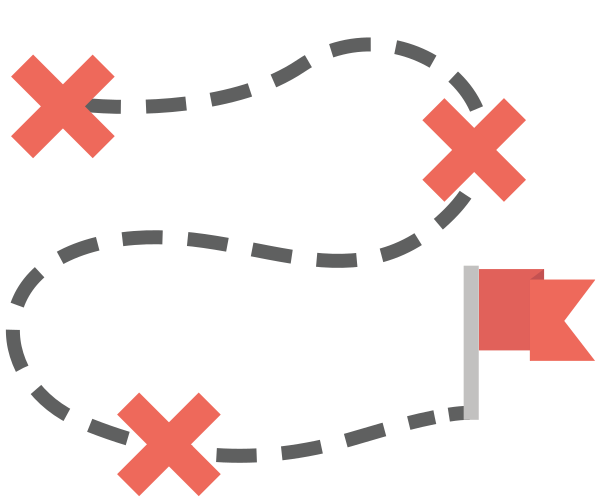

We've all heard about the drought in California, but how much do we really know? For many of us, the drought is a far-away concept, which doesn't affect our daily usage of water from faucets, showers, and more. To us, water doesn't seem to have changed. The Great Aquaventure is a Choose Your Own Adventure game designed to teach you the details about what you can do to make an impact, and how those actions can affect the environment. Start your journey below!